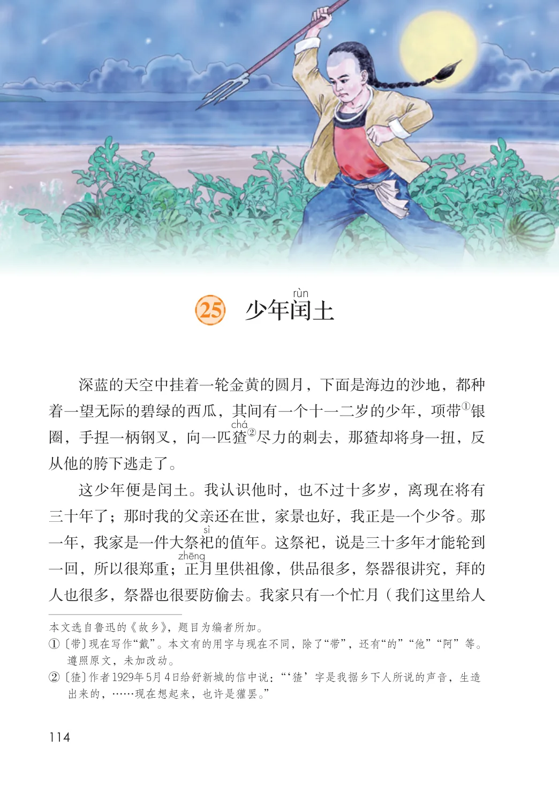
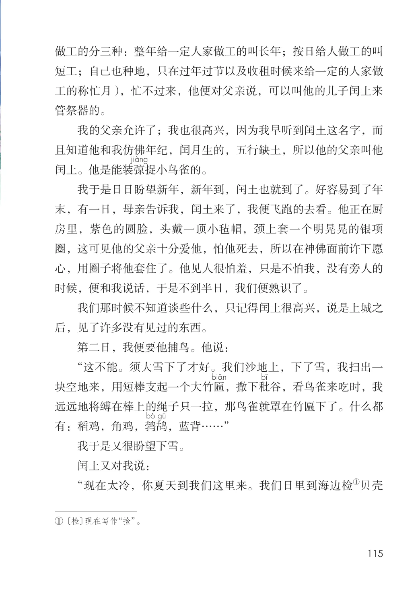
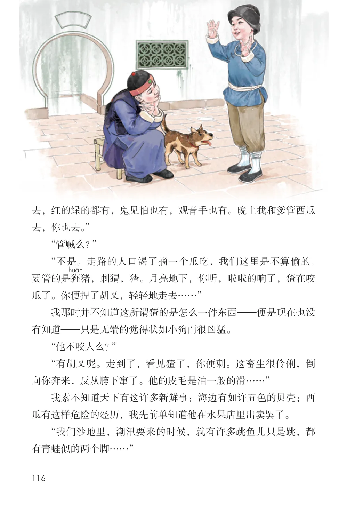
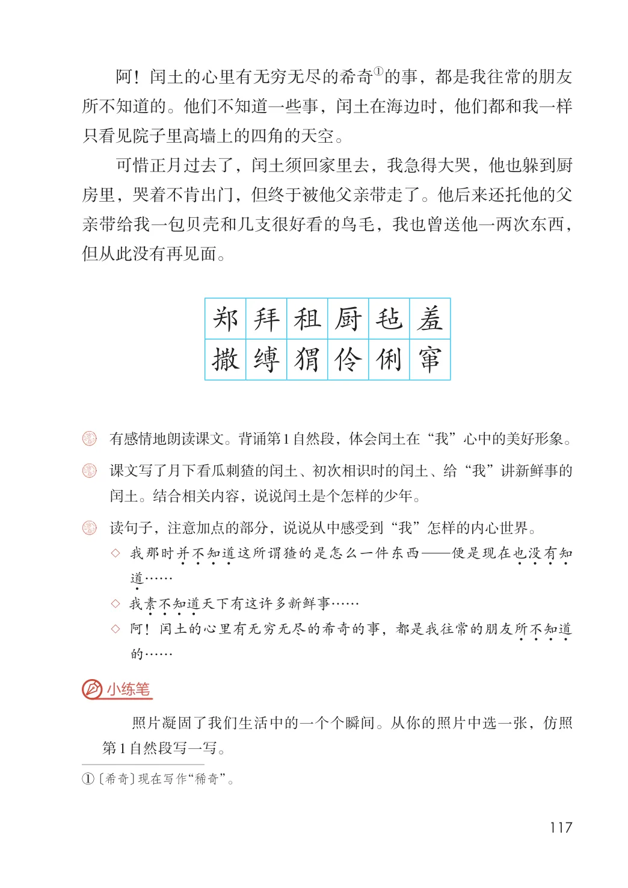

第八单元 · 第 25 课
少年闰土
文字内容 PDF 第 119 页
土
深蓝的天空中挂着一轮金黄的圆月，下面是海边的沙地，都种①银着一望无际的碧绿的西瓜，其间有一个十一二岁的少年，项带②尽力的刺去，那猹却将身一扭，反圈，手捏一柄钢叉，向一匹猹从他的胯下逃走了。
这少年便是闰土。我认识他时，也不过十多岁，离现在将有三十年了；那时我的父亲还在世，家景也好，我正是一个少爷。那一年，我家是一件大祭祀的值年。这祭祀，说是三十多年才能轮到一回，所以很郑重；正月里供祖像，供品很多，祭器很讲究，拜的人也很多，祭器也很要防偷去。我家只有一个忙月（我们这里给人遵照原文，未加改动。② 〔猹〕作者1929年5月4日给舒新城的信中说： “‘猹’字是我据乡下人所说的声音，生造出来的，……现在想起来，也许是獾罢。”
文字内容 PDF 第 120 页
做工的分三种：整年给一定人家做工的叫长年；按日给人做工的叫短工；自己也种地，只在过年过节以及收租时候来给一定的人家做工的称忙月），忙不过来，他便对父亲说，可以叫他的儿子闰土来管祭器的。
我的父亲允许了；我也很高兴，因为我早听到闰土这名字，而且知道他和我仿佛年纪，闰月生的，五行缺土，所以他的父亲叫他闰土。他是能装弶捉小鸟雀的。
我于是日日盼望新年，新年到，闰土也就到了。好容易到了年末，有一日，母亲告诉我，闰土来了，我便飞跑的去看。他正在厨房里，紫色的圆脸，头戴一顶小毡帽，颈上套一个明晃晃的银项圈，这可见他的父亲十分爱他，怕他死去，所以在神佛面前许下愿心，用圈子将他套住了。他见人很怕羞，只是不怕我，没有旁人的时候，便和我说话，于是不到半日，我们便熟识了。
我们那时候不知道谈些什么，只记得闰土很高兴，说是上城之后，见了许多没有见过的东西。
第二日，我便要他捕鸟。他说：
“这不能。须大雪下了才好。我们沙地上，下了雪，我扫出一块空地来，用短棒支起一个大竹匾，撒下秕谷，看鸟雀来吃时，我远远地将缚在棒上的绳子只一拉，那鸟雀就罩在竹匾下了。什么都有：稻鸡，角鸡，鹁鸪，蓝背……”
我于是又很盼望下雪。
闰土又对我说：
①贝壳“现在太冷，你夏天到我们这里来。我们日里到海边检① 〔检〕现在写作“捡”。
文字内容 PDF 第 121 页
去，红的绿的都有，鬼见怕也有，观音手也有。晚上我和爹管西瓜去，你也去。”
“管贼么？”
“不是。走路的人口渴了摘一个瓜吃，我们这里是不算偷的。要管的是獾猪，刺猬，猹。月亮地下，你听，啦啦的响了，猹在咬瓜了。你便捏了胡叉，轻轻地走去……”
我那时并不知道这所谓猹的是怎么一件东西—便是现在也没有知道—只是无端的觉得状如小狗而很凶猛。
“他不咬人么？”
“有胡叉呢。走到了，看见猹了，你便刺。这畜生很伶俐，倒向你奔来，反从胯下窜了。他的皮毛是油一般的滑……”
我素不知道天下有这许多新鲜事：海边有如许五色的贝壳；西瓜有这样危险的经历，我先前单知道他在水果店里出卖罢了。
“我们沙地里，潮汛要来的时候，就有许多跳鱼儿只是跳，都有青蛙似的两个脚……”
文字内容 PDF 第 122 页
①的事，都是我往常的朋友阿！闰土的心里有无穷无尽的希奇所不知道的。他们不知道一些事，闰土在海边时，他们都和我一样只看见院子里高墙上的四角的天空。
可惜正月过去了，闰土须回家里去，我急得大哭，他也躲到厨房里，哭着不肯出门，但终于被他父亲带走了。他后来还托他的父亲带给我一包贝壳和几支很好看的鸟毛，我也曾送他一两次东西，但从此没有再见面。
郑拜租厨毡羞撒缚猬伶俐窜
课后练习
- 有感情地朗读课文。背诵第1自然段，体会闰土在“我”心中的美好形象。课文写了月下看瓜刺猹的闰土、初次相识时的闰土、给“我”讲新鲜事的
- 闰土。结合相关内容，说说闰土是个怎样的少年。
- 读句子，注意加点的部分，说说从中感受到“我”怎样的内心世界。
- ◇ 我那时并不知道3 这所谓猹的是怎么一件东西—便是现在也没有知道3 ……
- ◇ 我素不知道3 天下有这许多新鲜事……
- ◇ 阿！闰土的心里有无穷无尽的希奇的事，都是我往常的朋友所不知道的……
- 小练笔照片凝固了我们生活中的一个个瞬间。从你的照片中选一张，仿照第1 自然段写一写。① 〔希奇〕现在写作“稀奇”。
原版对照
原书页面与全部插图
点击图片可查看大图。



